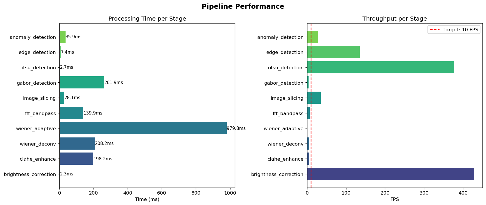
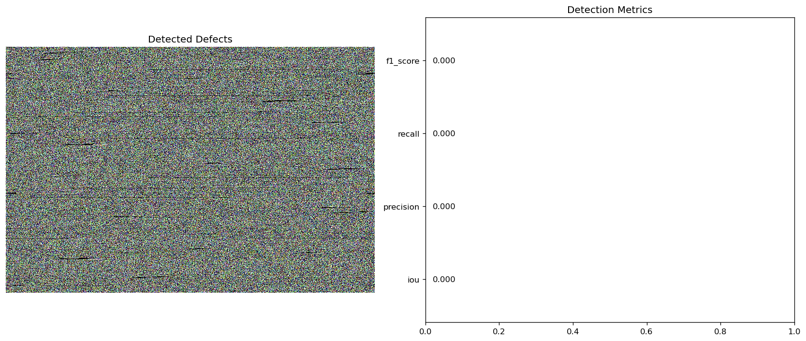
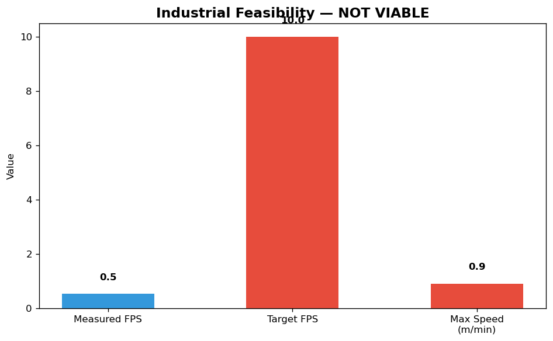

Timing Chart

Detection Results

Feasibility
{
"restoration_best": "clahe",
"defects_found": 0,
"feasibility": {
"measured_fps": 0.5363394346253385,
"target_fps": 10.0,
"meets_requirement": false,
"max_conveyor_speed_m_min": 0.9117770388630754,
"headroom_pct": -94.63660565374661
},
"histogram": {
"mean": 118.96380497685185,
"std": 103.64736018189237,
"median": 102.0,
"skewness": 0.05026299507482796,
"is_dark": "False",
"is_bright": "False",
"is_low_contrast": "False"
}
}